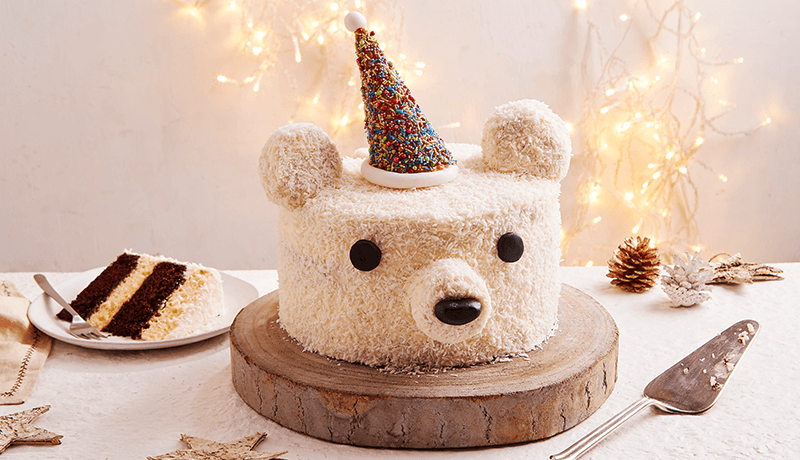

Desserts are one of the sweetest parts of life. From delicious chocolate cakes and soft cookies to creamy ice cream and colorful cupcakes, every dessert brings a little happiness. They come in different flavors, shapes, and colors, making them enjoyable for people of all ages. Some desserts are perfect for birthdays and celebrations, while others make an ordinary day feel special. Chocolate lovers enjoy rich and creamy treats, while fruit lovers may prefer fresh and refreshing desserts. The best thing about desserts is that they can be shared with family and friends, creating beautiful memories together. Whether it is a small cookie with a cup of tea or a slice of cake on a special occasion, a sweet treat can bring a smile to anyone's face. Desserts are more than just food; they are little moments of joy that make life sweeter.